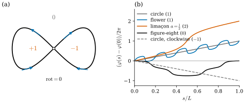
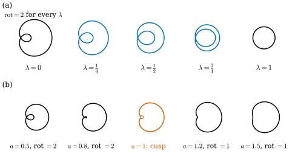

37.2 Turning Number and the Whitney–Graustein Theorem
Goals
- closed curve의 turning number와 점에 대한 winding number를 정의하고 계산할 수 있으며, 둘의 차이와 관계(turning number는 tangent의 winding number)를 설명할 수 있다.
- regular homotopy를 정의하고, turning number가 regular homotopy에서 변하지 않음을 증명할 수 있다.
- Whitney–Graustein theorem을 진술하고, turning number가 \(0\)이 아닐 때 regular homotopy를 직접 만드는 방법을 설명할 수 있다.
- 다각형의 winding number를 signed angle의 합으로 정확히 계산하고, 열린 자료에서 generalized winding number로 안팎을 판정할 수 있다.
Prerequisites
- Section 37.1: closed curve와 closing condition Proposition 37.1.7, regular curve와 immersion.
- closed curve와 simple closed curve Definition 5.6.1, rotation index Definition 5.6.3와 그 성질 Proposition 5.6.4, continuous angle function Lemma 5.6.6, rotation index theorem Theorem 5.6.7. 직관은 Theorem 0.2.7.
- turning angle의 합 Proposition 32.3.4.
Motivation
Proposition 37.1.7은 curvature로 만든 곡선이 닫히려면 \(\frac{1}{2\pi}\int\kappa_s\,ds\)가 정수여야 한다는 것을 보였다. 그 정수가 rotation index다(Definition 5.6.3). 이 절은 이 정수를 topology의 눈으로 다시 본다. 곡선을 조금씩 움직이면 curvature는 어디서나 바뀌지만 그 적분은 정수라서 갑자기 뛸 수 없다. 그렇다면 이 정수는 어떤 변형에서 보존되고, 어떤 변형에서 바뀌는가?
Chapter 32도 같은 현상을 다각형에서 보았다. Proposition 32.4.7은 turning angle의 합이 연속적인 변형에서 변하지 않는다는 것을 증명했고, 바뀌려면 edge의 길이가 \(0\)이 되거나 진행 방향이 정반대로 꺾여야 한다고 했다. smooth curve에서 그 “나쁜 순간”에 해당하는 것은 속도가 \(0\)이 되는 순간이다. 이 절은 그것을 regular homotopy라는 말로 정확히 하고, 강의가 소개하는 Whitney–Graustein theorem까지 간다.
Turning Number and Winding Number
강의 슬라이드는 closed regular curve의 tangent가 반시계 방향으로 도는 횟수를 turning number(회전수)라 부른다 [CMU-DDG L10]. 이것은 Chapter 5의 rotation index \(\operatorname{rot}(\gamma)\)(Definition 5.6.3)와 같은 수다. 이 장에서는 두 이름을 같은 뜻으로 쓰고 기호는 \(\operatorname{rot}(\gamma)\), 그 값은 \(k\)로 쓴다. 다시 적으면, 주기 \(T\)인 closed curve \(\gamma\)의 continuous tangent angle \(\varphi\)에 대하여
이다(Proposition 5.6.4(a)). 방향을 뒤집으면 부호가 바뀌고, rigid motion과 출발점을 바꾸는 것에는 변하지 않는다(같은 명제의 (a), (b), (d)).
Example 37.2.1 (turning numbers of the running examples). 반시계 방향 원은 \(k = 1\), 시계 방향 원은 \(k = -1\), 원을 두 번 돌면 \(k = 2\)이다. ellipse와 flower curve는 스스로 만나지 않는 반시계 방향 곡선이므로 \(k = 1\)이다(Theorem 5.6.7, Proposition 5.6.12). flower curve는 \(\kappa_s\)가 열 번 부호를 바꾸므로(Example 32.2.1) tangent angle이 오르내리지만, 한 바퀴의 순변화는 \(2\pi\)다. figure-eight \(\gamma(t) = (\sin t, \sin t\cos t)\)(Example 37.1.5)는 \(k = 0\)이고(Exercise 37.2.2), 안쪽에 loop이 있는 limaçon \(r(t) = \tfrac12 + \cos t\)(\(\gamma = r(\cos t, \sin t)\))는 \(k = 2\)다. 수치는 Figure 37.2.1(b)에 있다.
Verification: verify/v-37-2-turning-number.py
turning number는 tangent가 도는 횟수다. 이와 비슷하게 들리지만 다른 수가 있다. 곡선이 한 점 \(p\)의 둘레를 몇 번 감는가이다. 곡선 위의 점에서 \(p\)를 바라보는 방향이 한 바퀴 동안 몇 번 도는지를 세면 된다. 이 방향 \((\gamma(t) - p)/\abs{\gamma(t) - p}\)는 \(t\)의 연속함수이므로 Lemma 5.6.6(b)로 연속인 각으로 나타낼 수 있다.
Definition 37.2.2 (winding number). \(\gamma\colon \R \to \R^2\)가 주기 \(T\)인 continuous map이고 \(p \in \R^2\)가 trace \(\gamma([0, T])\) 위에 있지 않다고 하자. \(\alpha\colon [0, T] \to \R\)가 연속이고 모든 \(t\)에서 \((\gamma(t) - p)/\abs{\gamma(t) - p} = (\cos\alpha(t), \sin\alpha(t))\)를 만족하면
를 \(p\)에 대한 \(\gamma\)의 winding number(감김수)라 한다.
정의가 잘 되어 있는지 확인하자. 그런 \(\alpha\)는 있다: \([0, T]\)는 compact이고 star-shaped이므로 Lemma 5.6.6(b)를 쓸 수 있다. 두 \(\alpha\)는 같은 lemma의 유일성에 의해 \(2\pi\)의 정수배 상수만큼만 다르므로 (37.2.2)는 \(\alpha\)의 선택에 무관하다. \(\gamma(T) = \gamma(0)\)이므로 \(\alpha(T)\)와 \(\alpha(0)\)은 같은 방향을 나타내고, 따라서 \(\operatorname{wind}(\gamma, p)\)는 정수다. 출발점을 옮겨도 같은 값이 나온다는 것은 Proposition 5.6.4(a)의 증명과 같다. 곡선의 각 점을 \(p\)를 중심으로 하는 단위원 위로 보내면, 그 점이 단위원 위를 움직인 부호 있는 거리가 바로 \(\alpha(T) - \alpha(0)\)이다.
Proposition 37.2.3 (integral formula). \(\gamma\)가 주기 \(T\)인 smooth closed curve이고 \(p\)가 trace 위에 있지 않으면
이다.
Proof. \(v(t) = \gamma(t) - p\), \(u = v/\abs{v}\)라 하자. \(u\)는 매끄럽고 크기가 \(1\)이므로 Lemma 4.4.8에 의해 smooth angle function \(\alpha_1\)이 있고 \(\alpha_1' = \inner{u'}{Ju} = \det(u, u')\)이다(\(\inner{w}{Ju} = \det(u, w)\)는 성분으로 바로 확인된다). \(u' = v'/\abs{v} + v\,(1/\abs{v})'\)이고 \(\det(u, u)\)는 \(0\)이므로 \(\det(u, u') = \det(v, v')/\abs{v}^2\)이다. \(\alpha_1\)을 \([0, T]\)로 제한한 것은 Definition 37.2.2의 \(\alpha\)이므로 \(\alpha(T) - \alpha(0) = \int_0^T\alpha_1'\,dt\)이다.
Example 37.2.4 (winding numbers). (a) 반지름 \(r\)인 원을 두 번 도는 \(\gamma(t) = r(\cos t, \sin t)\), \(0 \le t \le 4\pi\)에서 중심 \(p = 0\)이면 \(\alpha(t) = t\)이므로 \(\operatorname{wind} = 2\)이다. 원 밖의 점은 \(\operatorname{wind} = 0\)이다(Exercise 37.2.1). (b) figure-eight \((\sin t, \sin t\cos t)\)는 왼쪽 loop 안의 점에 대해 \(+1\), 오른쪽 loop 안의 점에 대해 \(-1\), 바깥의 점에 대해 \(0\)이다. 오른쪽 loop은 시계 방향으로, 왼쪽 loop은 반시계 방향으로 돌기 때문이다(Figure 37.2.1(a)). (c) limaçon \(r = \tfrac12 + \cos t\)는 안쪽 loop 안의 점 \((0.1, 0)\)에 대해 \(2\), 바깥 loop과 안쪽 loop 사이의 점 \((1.2, 0)\)에 대해 \(1\), 바깥의 점에 대해 \(0\)이다.
Verification: verify/v-37-2-turning-number.py
Non-example 37.2.5. \(p\)가 trace 위에 있으면 winding number는 정의되지 않는다. 예를 들어 figure-eight의 교차점 \(p = (0, 0)\)에서는 \(\gamma(t) - p\)가 \(t = 0, \pi\)에서 \(0\)이 되어 방향이 없다. \(p\)가 교차점을 지나 오른쪽 loop에서 왼쪽 loop으로 옮겨 가면 winding number는 \(-1\)에서 \(+1\)로 뛴다. trace를 건널 때마다 winding number가 \(\pm1\)씩 바뀌는 것이 일반적인 모습이다.

Figure 37.2.1의 (a)에서 화살표를 따라 figure-eight을 한 바퀴 돌아 보자. 교차점에서 출발해 오른쪽 위로 올라간 뒤 오른쪽 loop을 시계 방향으로 돌고, 교차점을 지나 왼쪽 loop을 반시계 방향으로 돈다. 그래서 두 loop의 winding number는 부호가 반대다. tangent는 오른쪽 loop에서 시계 방향으로 거의 한 바퀴, 왼쪽 loop에서 반시계 방향으로 거의 한 바퀴 돌아 서로 상쇄된다. (b)의 검은 곡선이 정확히 그 모습이다. 처음에 \(-0.75\)바퀴까지 내려갔다가(오른쪽 loop), 다시 \(0\)으로 올라온다(왼쪽 loop). 주홍 limaçon은 안쪽 loop을 도는 동안(\(s/L\)가 \(0.5\) 근처) 가파르게 올라 모두 두 바퀴를 돈다.
두 수는 다음과 같이 이어진다. turning number는 곡선 자신이 아니라 속도 \(\gamma'\)가 그리는 closed curve의 winding number다.
Proposition 37.2.6 (turning number as a winding number). \(\gamma\)가 주기 \(T\)인 regular closed curve이면 \(t \mapsto \gamma'(t)\)는 원점을 지나지 않는 주기 \(T\)인 closed curve이고
이다.
Proof. regular이므로 \(\gamma'(t) \neq 0\)이다. Definition 37.2.2를 \(\gamma'\)과 \(p = 0\)에 적용하면 \(\alpha\)는 \(\gamma'/\abs{\gamma'} = \mathbf{t}\)의 연속인 각, 곧 continuous tangent angle이다. 따라서 (37.2.1)에서 \((\alpha(T) - \alpha(0))/2\pi = \operatorname{rot}(\gamma)\)이다.
topology에서는 단위원에서 단위원으로 가는 연속 map이 단위원을 감는 횟수를 그 map의 degree라 부른다. 그 언어로는 turning number가 tangent map \(\mathbf{t}\colon S^1 \to S^1\)의 degree이고, winding number가 \(p\) 둘레로의 projection \(S^1 \to S^1\)의 degree다 [CMU-DDG L10]. 이 장에서는 degree를 따로 정의하지 않고 위의 각의 변화로만 쓴다. 두 수는 서로 다른 map의 degree이므로 같을 이유가 없다. figure-eight은 \(k = 0\)이지만 loop 안의 점에 대해 winding number가 \(\pm1\)이고, 원을 두 번 도는 곡선은 \(k = 2\)이고 중심에 대해서도 \(2\)다.
Regular Homotopy
이제 곡선을 연속적으로 변형하자. 주기는 \(1\)로 맞춘다. 주기 \(T\)인 closed curve는 \(t \mapsto \gamma(Tt)\)로 바꾸면 주기 \(1\)이 되고, rotation index는 그대로다(Proposition 5.6.4(b)).
Definition 37.2.7 (regular homotopy). \(\gamma_0, \gamma_1\colon \R \to \R^2\)가 주기 \(1\)인 regular closed curve라 하자. continuous map \(H\colon \R \times [0, 1] \to \R^2\)가 다음을 만족하면 \(H\)를 \(\gamma_0\)에서 \(\gamma_1\)로 가는 regular homotopy(정칙 호모토피)라 하고, 그런 \(H\)가 있으면 \(\gamma_0\)과 \(\gamma_1\)이 regularly homotopic하다고 한다. (a) \(H(t, 0) = \gamma_0(t)\), \(H(t, 1) = \gamma_1(t)\). (b) 모든 \(\lambda \in [0, 1]\)에서 \(\gamma_\lambda = H(\cdot, \lambda)\)는 주기 \(1\)인 regular closed curve다. (c) 편도함수 \(\partial_tH\)가 \(\R \times [0, 1]\)에서 연속이다.
(b)가 핵심이다. 변형하는 도중의 모든 곡선이 regular해야 한다. 곧 어느 순간에도 속도가 \(0\)이 되어 cusp가 생기면 안 된다. (c)는 tangent가 \(t\)와 \(\lambda\)에 대해 함께 연속이라는 요구다.
Example 37.2.8. (a) ellipse \(\gamma_0(t) = (2\cos 2\pi t, \sin 2\pi t)\)와 단위원 \(\gamma_1(t) = (\cos 2\pi t, \sin 2\pi t)\) 사이의 \(H(t, \lambda) = ((2 - \lambda)\cos 2\pi t, \sin 2\pi t)\)는 regular homotopy다. \(\partial_tH = 2\pi(-(2 - \lambda)\sin 2\pi t, \cos 2\pi t)\)는 연속이고, 두 성분이 동시에 \(0\)이 될 수 없기 때문이다. (b) translation, 회전, 양수배의 확대도 regular homotopy로 이을 수 있다. 예를 들어 \(H(t, \lambda) = \gamma(t) + \lambda c\)이면 \(\partial_tH = \gamma'(t) \neq 0\)이다.
Non-example 37.2.9 (homotopies through a cusp). (a) limaçon의 family \(\gamma_a(t) = (a + \cos t)(\cos t, \sin t)\)에서 \(\abs{\gamma_a'}^2 = 1 + a^2 + 2a\cos t\)이고, 그 최솟값은 \((1 - a)^2\)이다(Exercise 37.2.4). 곧 \(a \neq 1\)이면 regular이고 \(a = 1\)(cardioid)에서는 \(t = \pi\)에서 속도가 \(0\)이 된다. \(a\)를 \(\tfrac12\)에서 \(\tfrac32\)로 바꾸는 family는 모든 순간 closed curve지만 \(a = 1\)에서 (b)가 깨지므로 regular homotopy가 아니다. 실제로 turning number는 \(a \lt 1\)에서 \(2\), \(a \gt 1\)에서 \(1\)이다(Figure 37.2.2(b)). (b) 반시계 방향 원 \((\cos 2\pi t, \sin 2\pi t)\)에서 시계 방향 원 \((\cos 2\pi t, -\sin 2\pi t)\)로 가는 linear interpolation \(H(t, \lambda) = (\cos 2\pi t, (1 - 2\lambda)\sin 2\pi t)\)는 \(\lambda = \tfrac12\)에서 선분을 왕복하는 곡선 \((\cos 2\pi t, 0)\)이 되고, 그 속도는 \(t = 0, \tfrac12\)에서 \(0\)이다.
Theorem 37.2.10 (invariance of the turning number). \(\gamma_0\)과 \(\gamma_1\)이 regularly homotopic하면 \(\operatorname{rot}(\gamma_0) = \operatorname{rot}(\gamma_1)\)이다.
이 정리가 말하는 것. cusp를 만들지 않고 곡선을 변형하는 동안 tangent가 도는 횟수는 바뀌지 않는다. 바꾸려면 어느 순간 속도가 \(0\)이 되어야 한다.
Proof idea: 변형 전체에 걸쳐 tangent의 각을 한꺼번에 연속으로 잡는다. 그러면 turning number는 \(\lambda\)의 연속함수이고 정수값만 가지므로 상수다.
Proof. \(H\)를 regular homotopy라 하고 \(K = [0, 1] \times [0, 1]\)에서 \(\psi(t, \lambda) = \partial_tH/\abs{\partial_tH}\)라 하자. (b)에서 분모는 \(0\)이 아니고 (c)에서 \(\psi\)는 연속이다. \(K\)는 compact이고 한 점 \((0, 0)\)에 대해 star-shaped이므로 Lemma 5.6.6(b)에 의해 연속함수 \(\theta\colon K \to \R\)가 있어 \(\psi = (\cos\theta, \sin\theta)\)이다. \(\lambda\)를 고정하면 \(\theta(\cdot, \lambda)\)는 \(\gamma_\lambda\)의 unit tangent의 \([0, 1]\) 위의 연속인 각이다. \(\gamma_\lambda\)의 smooth tangent angle \(\varphi_\lambda\)(Lemma 4.4.8)를 \([0, 1]\)로 제한한 것과 \(\theta(\cdot, \lambda)\)는 Lemma 5.6.6(b)의 유일성에 의해 \(2\pi\)의 정수배 상수만큼만 다르므로, (37.2.1)에서
\[ f(\lambda) := \frac{\theta(1, \lambda) - \theta(0, \lambda)}{2\pi} = \frac{\varphi_\lambda(1) - \varphi_\lambda(0)}{2\pi} = \operatorname{rot}(\gamma_\lambda) \in \Z \]이다. \(\theta\)가 연속이므로 \(f\)는 \([0, 1]\)에서 연속이다. 정수값만 갖는 연속함수가 \(f(0) \neq f(1)\)이면 intermediate value theorem에 의해 그 사이의 정수가 아닌 값도 가져야 하므로 모순이다. 따라서 \(f(0) = f(1)\)이다.
Non-example 37.2.9가 이 정리와 맞는다는 것을 확인하자. limaçon family에서 turning number가 \(2\)에서 \(1\)로 바뀐 것은 cardioid에서 regularity가 깨졌기 때문이다. 다각형의 경우 Proposition 32.4.7이 같은 논법(정수값 연속함수는 상수)이었다.
놀라운 것은 그 역도 성립한다는 것이다.
Theorem 37.2.11 (Whitney–Graustein theorem). 주기 \(1\)인 두 regular closed curve가 regularly homotopic할 필요충분조건은 turning number가 같은 것이다.
이 정리가 말하는 것. regular homotopy로 바꿀 수 없는 곡선의 성질은 turning number 하나뿐이다. 스스로 몇 번 가로지르는지, 어떤 모양의 loop이 있는지는 모두 regular homotopy로 바꿀 수 있다. 이 정리는 Whitney의 1937년 논문에 있고 [Whitney37], 이름에는 Graustein도 함께 붙는다.
Proof sketch. “필요”는 Theorem 37.2.10이다. “충분”은 turning number \(k\)가 \(0\)이 아닐 때 다음과 같이 regular homotopy를 직접 만들 수 있다. (1) 양수배 확대와 방향을 보존하는 reparametrization은 regular homotopy로 이을 수 있다. \(c \gt 0\)배 확대는 \(H(t, \lambda) = (1 - \lambda + \lambda c)\gamma(t)\)로, \(h' \gt 0\)이고 \(h(t + 1) = h(t) + 1\)인 reparametrization은 \(H(t, \lambda) = \gamma\bigl((1 - \lambda)t + \lambda h(t)\bigr)\)로 이으면 두 경우 모두 \(\partial_tH \neq 0\)이다. 그래서 두 곡선이 모두 길이 \(2\pi\)이고 arc length \(s\)로 parametrization되어 있다고 해도 된다(주기를 \(1\)로 되돌리려면 \(s = 2\pi t\)로 쓴다). tangent angle을 \(\varphi_0, \varphi_1\)이라 하면 \(\varphi_j(s + 2\pi) = \varphi_j(s) + 2\pi k\)이다. (2) 각을 interpolate한다: \(\varphi_\lambda = (1 - \lambda)\varphi_0 + \lambda\varphi_1\). 이것도 \(\varphi_\lambda(s + 2\pi) = \varphi_\lambda(s) + 2\pi k\)를 만족하므로 \(\mathbf{t}_\lambda = (\cos\varphi_\lambda, \sin\varphi_\lambda)\)는 주기 \(2\pi\)다. (3) 그러나 \(\mathbf{t}_\lambda\)를 적분한 곡선은 닫히지 않을 수 있다(Proposition 37.1.7의 (ii)). 그래서 평균 \(m(\lambda) = \frac{1}{2\pi}\int_0^{2\pi}\mathbf{t}_\lambda\,ds\)를 빼고
로 둔다. 적분하는 함수의 한 주기 평균이 \(0\)이므로 \(\gamma_\lambda\)는 주기 \(2\pi\)인 closed curve다. \(\lambda = 0\)에서는 \(m(0) = \frac{1}{2\pi}(\gamma_0(2\pi) - \gamma_0(0)) = 0\)이므로 \(\gamma_\lambda = \gamma_0\)이고, \(\lambda = 1\)에서도 같다. (4) regularity: \(\abs{\gamma_\lambda'} = \abs{\mathbf{t}_\lambda - m(\lambda)} \ge 1 - \abs{m(\lambda)}\)이다. 적분의 triangle inequality에서 \(\abs{m(\lambda)} \le 1\)이고, 등호는 연속인 단위벡터 \(\mathbf{t}_\lambda\)가 상수일 때뿐이다. 그런데 \(\varphi_\lambda\)는 한 주기에 \(2\pi k \neq 0\)만큼 변하므로 \(\mathbf{t}_\lambda\)는 상수가 아니다. 따라서 \(\abs{m(\lambda)} \lt 1\)이고 \(\gamma_\lambda\)는 모든 \(\lambda\)에서 regular다. \(\partial_s\gamma_\lambda = \mathbf{t}_\lambda - m(\lambda)\)는 \((s, \lambda)\)에 대해 연속이다. \(k = 0\)이면 (4)가 깨질 수 있다. 예를 들어 figure-eight과 그 거울상 \((x, y) \mapsto (-x, y)\)의 tangent angle은 \(\varphi_1 = \pi - \varphi_0\)이므로 \(\lambda = \tfrac12\)에서 \(\varphi_\lambda\)가 상수가 되고 \(\gamma_\lambda' = 0\)이다. 이 경우는 다른 논법이 필요하며 Whitney의 논문이 그것을 다룬다 [Whitney37].

Figure 37.2.2의 두 줄은 같은 곡선(안쪽 loop이 있는 limaçon)에서 출발한다. 윗줄은 tangent의 각을 섞어서 움직인다. 안쪽 loop은 사라지지 않고 오히려 커지면서 바깥 loop과 크기가 같아져, 끝에서는 원을 두 번 도는 곡선이 된다. 속도는 내내 \(0.94\) 이상이다. 아랫줄은 매개변수 \(a\)를 바꾼다. 안쪽 loop이 줄어들다가 가운데 주홍 곡선에서 한 점으로 오그라들며 cusp가 되고, 그 다음부터는 loop 없는 곡선이다. loop 하나가 사라지면서 tangent가 도는 횟수가 하나 줄었다. regular homotopy로는 이 일이 일어날 수 없다.
(b)에서 turning number가 왜 cusp에서만 바뀔 수 있는지는 Proposition 37.2.6의 눈으로 보면 분명하다. Animation 37.2.1은 limaçon \(r = a + \cos t\)의 속도 \(\gamma_a'(t)\)를 원점에서 그린 곡선(파랑)을 함께 보여 준다. 먼저 \(a = \tfrac12\)에서 점이 곡선을 한 바퀴 도는 동안 속도 화살표가 원점 둘레를 두 바퀴 도는 것을 보자. 그다음 \(a\)를 키우면 파란 곡선의 안쪽 loop이 원점 쪽으로 오그라든다. 원점을 감는 횟수는 loop이 원점을 지나는 순간에만 바뀔 수 있고, 그 순간이 \(\gamma'(\pi) = 0\)인 cardioid(\(a = 1\))다.
lib/ddg37.limacon_expr)와 그 속도 \(\gamma_a'(t) = a(-\sin t, \cos t) + (-\sin 2t, \cos 2t)\), 곧 반지름 \(a\)인 원을 한 번 도는 것과 단위원을 두 번 도는 것의 합이다. 앞부분은 \(a = \tfrac12\)에서 한 바퀴, 가운데는 \(a\)를 \(0.5\)에서 \(1.5\)까지 바꾸고, 뒷부분은 \(a = 1.5\)에서 한 바퀴다.
읽는 법: 왼쪽 검은 곡선이 \(\gamma_a\), 움직이는 점과 파란 화살표가 그 위치와 속도(길이는 \(0.45\)배)다. 가운데 파란 곡선이 \(\gamma_a'\)를 원점(검은 점)에서 그린 것이고, 파란 화살표가 같은 속도 vector다. 회색 점선 원의 반지름이 최소 속력 \(\min\abs{\gamma_a'} = \abs{1 - a}\)(Exercise 37.2.4)다. 오른쪽 숫자가 \(a\), 최소 속력, turning number, 그리고 한 바퀴 동안 속도 화살표가 원점 둘레를 돈 횟수다.
볼 것: \(a = 0.5\)에서 화살표는 \(2.00\)바퀴를 돈다. \(a \lt 1\)인 동안 회색 원이 작아지지만 파란 곡선은 원점을 비켜 가고 turning number는 \(2\)다. \(a = 1\)에서 회색 원이 점이 되고 파란 곡선이 원점(주홍)을 지나며, 왼쪽 곡선의 \(t = \pi\)(흰 동그라미)에 cusp가 생긴다. 그 뒤로 원점은 안쪽 loop 밖에 있고, \(a = 1.5\)에서 화살표는 \(1.00\)바퀴만 돈다.
본문과의 연결: Proposition 37.2.6, Theorem 37.2.10, Non-example 37.2.9(a), Figure 37.2.2(b).
시간: 0–1.5초 처음 상태, 1.5–8초 \(a = 0.5\)에서 한 바퀴(두 번 감는다), 8–13초 \(a\)가 \(1\)로 다가간다, 13–15.5초 \(a = 1\)의 cusp, 15.5–21.5초 \(a\)가 \(1.5\)까지, 21.5–27초 \(a = 1.5\)에서 한 바퀴(한 번 감는다), 27–28.5초 끝 상태.Corollary 37.2.12 (no regular homotopy reverses a circle). 반시계 방향 원과 시계 방향 원은 regularly homotopic하지 않다.
Proof. turning number가 \(1\)과 \(-1\)로 다르므로(Example 37.2.1) Theorem 37.2.10에 의해 regularly homotopic하지 않다.
평면에서는 원을 “뒤집을” 수 없다. 반면 \(\R^3\)의 sphere는 immersion을 유지한 채로 안팎을 뒤집을 수 있다(Smale의 sphere eversion). 이것은 Section 38.1에서 짧게 소개한다.
Computing Winding Numbers
다각형의 winding number는 적분 없이 정확히 계산된다. closed polygon \(P_0, \dots, P_{n-1}\)(첨자는 \(n\)을 법으로)과 그 위에 있지 않은 점 \(p\)를 생각하자. 다각형을 continuous closed curve로 보면(edge \(j\)를 \([j, j + 1]\)에 linear하게 parametrize, 주기 \(n\)) Definition 37.2.2가 그대로 적용된다.
Proposition 37.2.13 (winding number of a polygon). \(a_j = P_j - p\)라 하면
이다. 여기서 \(\angle(a, b) \in (-\pi, \pi)\)는 \(a\)에서 \(b\)로의 signed angle이다.
Proof idea: edge 하나 위에서 \(p\)를 바라보는 방향은 반바퀴보다 적게 돌므로, 각의 변화는 양 끝 방향 사이의 작은 쪽 각이다.
Proof. edge \(j\) 위의 점은 \(\gamma(j + \sigma) - p = (1 - \sigma)a_j + \sigma a_{j+1}\)(\(0 \le \sigma \le 1\))이다. \(p\)가 edge 위에 있지 않으므로 이 vector는 \(0\)이 아니고, 특히 \(a_{j+1}\)은 \(a_j\)의 음수배가 아니다(그러면 선분이 \(p\)를 지난다). 따라서 \(\angle(a_j, a_{j+1})\)이 정의된다(Lemma 5.6.6(a)). \(m\)을 \(a_j\)와 \(a_{j+1}\)의 angle bisector 방향의 단위벡터라 하자. 두 vector는 모두 \(m\)과 양의 inner product를 가지므로(각이 \(\pi/2\) 미만) 그 양수 결합인 edge 위의 모든 vector도 \(m\)과 양의 inner product를 가진다. 곧 edge 위에서 방향은 \(-m\)을 지나지 않고, Lemma 5.6.6(c)에 의해 각의 변화는 \(\angle(m, \cdot)\)의 변화, 곧 \(\angle(m, a_{j+1}) - \angle(m, a_j) = \angle(a_j, a_{j+1})\)이다. edge들의 각의 변화를 모두 더한 것이 \(\alpha(n) - \alpha(0)\)이다.
Summary
- turning number \(\operatorname{rot}(\gamma)\)는 tangent가 도는 횟수이고 Chapter 5의 rotation index와 같다. winding number \(\operatorname{wind}(\gamma, p)\)는 곡선이 점 \(p\)를 감는 횟수다. 둘은 다른 수이며, turning number는 \(\gamma'\)의 원점에 대한 winding number다 (37.2.4).
- regular homotopy는 모든 순간 regular한 closed curve를 거치는 연속 변형이다. turning number는 regular homotopy에서 변하지 않는다(Theorem 37.2.10). limaçon family처럼 cusp를 거치면 바뀔 수 있다.
- Whitney–Graustein theorem: turning number가 같으면 regularly homotopic하다. \(k \neq 0\)이면 tangent angle을 interpolate하고 평균을 빼서 직접 만들 수 있다 (37.2.5). 원은 평면에서 뒤집을 수 없다.
- 다각형의 winding number는 signed angle의 합 (37.2.6)으로 정확히 계산되고, 열린 자료에서는 generalized winding number가 된다.
다음 절에서는 평면을 떠나 space curve로 간다. 공간에서는 왼쪽·오른쪽이 없어 curvature의 부호가 사라지는 대신 torsion이 생긴다. Frenet frame이 언제 정의되지 않는지 보고, 그 대안인 adapted frame과 Bishop frame을 만든다.
Exercises
Exercise 37.2.1 ★ 원을 두 번 도는 \(\gamma(t) = r(\cos t, \sin t)\), \(0 \le t \le 4\pi\)(주기 \(4\pi\))에 대해 (37.2.3)으로 \(\operatorname{wind}(\gamma, 0)\)을 계산하여라. \(\abs{p} \gt r\)인 점 \(p\)에 대해서는 \(0\)임을 angle function으로 설명하여라.
Solution
\(\gamma - 0 = r(\cos t, \sin t)\), \(\gamma' = r(-\sin t, \cos t)\)이므로 \(\det(\gamma, \gamma') = r^2\), \(\abs{\gamma}^2 = r^2\)이고 (37.2.3)은 \(\frac{1}{2\pi}\int_0^{4\pi}1\,dt = 2\)이다. \(\abs{p} \gt r\)이면 trace는 \(p\)를 지나는 직선 \(\{x : \inner{x - p}{p} = 0\}\)의 한쪽, 곧 \(\inner{x - p}{-p} \gt 0\)인 쪽에 있다(\(\inner{x}{p} \le r\abs{p} \lt \abs{p}^2\)). 따라서 방향 \((\gamma - p)/\abs{\gamma - p}\)는 언제나 \(-p/\abs{p}\)와 \(\pi/2\) 미만의 각을 이루고, \(m = -p/\abs{p}\)로 Lemma 5.6.6(c)를 쓰면 \(\alpha(4\pi) - \alpha(0) = \angle(m, \cdot)\)의 변화 \(= 0\)이다(\(\gamma(4\pi) = \gamma(0)\)).
Exercise 37.2.2 ★★ figure-eight \(\gamma(t) = (\sin t, \sin t\cos t)\)의 속도 \(\gamma'(t) = (\cos t, \cos 2t)\)는 \((0, 1)\) 방향을 결코 가리키지 않음을 보여라. 이것과 Proposition 37.2.6으로 \(\operatorname{rot}(\gamma) = 0\)임을 증명하여라.
Hint
angle function이 어떤 길이 \(2\pi\)의 열린 구간 안에만 머물면 한 주기의 변화는 \(2\pi\)의 정수배이면서 절댓값이 \(2\pi\)보다 작다.
Solution
\(\gamma'(t)\)가 \((0, 1)\)의 양수배이면 \(\cos t = 0\)이고 \(\cos 2t \gt 0\)이어야 한다. 그런데 \(\cos t = 0\)이면 \(\cos 2t = 2\cos^2 t - 1 = -1\)이므로 불가능하다. \(\alpha\)를 \(\gamma'/\abs{\gamma'}\)의 연속인 각이라 하고, \(\gamma'(0) = (1, 1)\)이므로 \(\alpha(0) = \pi/4\)로 잡자. \(\alpha(t)\)가 \(\pi/2 + 2\pi j\)(\(j \in \Z\)) 꼴의 값을 가지면 그 순간 \(\gamma'\)이 \((0, 1)\) 방향이므로, \(\alpha\)는 그런 값을 지나지 않는다. intermediate value theorem에 의해 \(\alpha([0, 2\pi]) \subseteq (-3\pi/2, \pi/2)\)이다(\(\alpha(0) = \pi/4\)가 이 구간에 있다). 따라서 \(\abs{\alpha(2\pi) - \alpha(0)} \lt 2\pi\)인데, 이 차는 \(2\pi\operatorname{rot}(\gamma)\)이므로 \(\operatorname{rot}(\gamma) = 0\)이다.
Exercise 37.2.3 ★ 참인지 거짓인지 판별하고 이유를 들어라. (a) 원점에 대한 winding number가 \(0\)이 아닌 closed curve는 원점에서 나가는 모든 반직선과 만난다. (b) turning number가 \(0\)인 regular closed curve는 스스로 만나야 한다. (c) 원을 두 번 도는 곡선과 figure-eight은 regularly homotopic하다.
Solution
(a) 참. 원점에서 \(c = (\cos\beta, \sin\beta)\) 방향으로 나가는 반직선과 곡선이 만나지 않는다고 하자. 그러면 angle function \(\alpha\)는 \(\beta + 2\pi j\) 꼴의 값을 갖지 않으므로, intermediate value theorem에 의해 \(\alpha([0, T])\)는 길이 \(2\pi\)인 열린 구간 \((\beta + 2\pi j, \beta + 2\pi(j + 1))\) 하나에 들어간다. 그러면 \(\abs{\alpha(T) - \alpha(0)} \lt 2\pi\)이고 이것은 \(2\pi\)의 정수배이므로 winding number는 \(0\)이다. 대우를 취하면 된다. Exercise 37.2.2와 같은 논법이다. (b) 참. simple closed curve이면 rotation index theorem(Theorem 5.6.7)에 의해 turning number가 \(\pm1\)이므로 \(0\)일 수 없다. (c) 거짓. turning number가 \(2\)와 \(0\)으로 다르므로 Theorem 37.2.10에 의해 regularly homotopic하지 않다.
Exercise 37.2.4 ★ limaçon \(\gamma_a(t) = (a + \cos t)(\cos t, \sin t)\)에서 \(\abs{\gamma_a'(t)}^2 = 1 + a^2 + 2a\cos t\)임을 보이고, \(a \gt 0\)일 때 최솟값이 \((1 - a)^2\)임을 확인하여라.
Solution
\(u = (\cos t, \sin t)\), \(u^\perp = (-\sin t, \cos t)\)로 쓰면 \(u' = u^\perp\)이고 \(r = a + \cos t\), \(r' = -\sin t\)이므로 \(\gamma_a' = r'u + ru^\perp\)이다(Example 32.2.1과 같은 계산). \(u, u^\perp\)는 orthonormal이므로 \(\abs{\gamma_a'}^2 = r'^2 + r^2\) \(= \sin^2 t + a^2 + 2a\cos t + \cos^2 t\) \(= 1 + a^2 + 2a\cos t\)이다. \(a \gt 0\)이면 \(\cos t = -1\)(\(t = \pi\))에서 최소이고 그 값은 \(1 + a^2 - 2a = (1 - a)^2\)이다. 따라서 \(a = 1\)에서만 속도가 \(0\)이 되는 점이 생긴다.
Exercise 37.2.5 ★
Coding. 단위원에 내접한 정 \(64\)각형의 vertex 가운데 처음 \(57\)개(각 \(0^\circ\)에서 \(315^\circ\)까지, edge \(56\)개)만 남긴 열린 다각형에 대해, Implementation의 winding_number로 다섯 점 \((0, 0)\), \((-0.5, 0)\), \((0.9, -0.2)\), \((1.2, -0.3)\), \((2, 0)\)의 generalized winding number를 계산하여라. 같은 vertex로 닫은 다각형의 값과 비교하고, 문턱값 \(\tfrac12\)로 판정한 안팎이 맞는지 보아라.
Solution
a = 2 * np.pi * np.arange(57) / 64 # 56 edges: the arc from 0 to 315 degrees
P = np.stack([np.cos(a), np.sin(a)], 1)
for q in [(0.0, 0.0), (-0.5, 0.0), (0.9, -0.2), (1.2, -0.3), (2.0, 0.0)]:
w_open = winding_number(P, np.array(q), closed=False)
w_closed = winding_number(P, np.array(q), closed=True)
print(f"q = {q}: open {w_open:.3f}, closed {round(w_closed)}, inside by threshold: {w_open > 0.5}")Implementation의 코드를 먼저 실행한 뒤 실행한다. 출력은 다음과 같다.
q = (0.0, 0.0): open 0.875, closed 1, inside by threshold: True
q = (-0.5, 0.0): open 0.916, closed 1, inside by threshold: True
q = (0.9, -0.2): open 0.516, closed 1, inside by threshold: True
q = (1.2, -0.3): open 0.266, closed 0, inside by threshold: False
q = (2.0, 0.0): open 0.080, closed 0, inside by threshold: False닫은 다각형의 값은 정확히 \(1\)(안) 또는 \(0\)(밖)이다(Proposition 37.2.13). 열린 다각형에서 원점의 값 \(0.875 = 315/360\)은 원점에서 본 호의 각을 \(2\pi\)로 나눈 것이다. 빠진 호(\(315^\circ\)에서 \(360^\circ\))에 가까운 점일수록 값이 \(\tfrac12\)에 가까워지지만, 다섯 점 모두 문턱값 \(\tfrac12\)로 닫은 다각형과 같은 판정을 받는다.